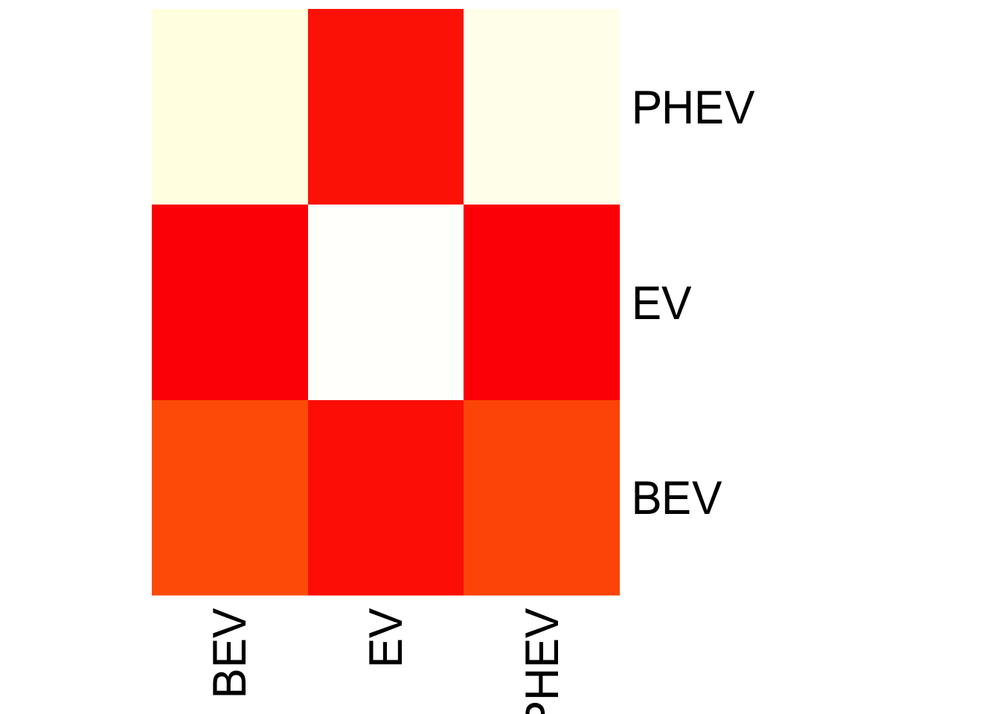
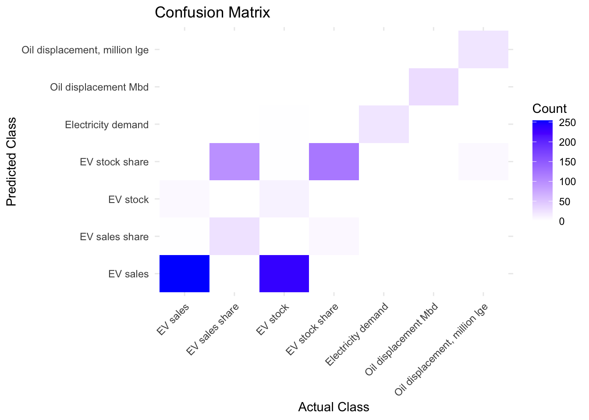

Naive Bayes is a straightforward predictive model that uses Bayes’ theorem under the assumption of feature independence within classes. It’s known for its efficiency and effectiveness, especially in text classification and spam filtering.
Applying Naive Bayes Classification to EV Data:
This dataset captures the dynamics of electric vehicle (EV) adoption in Australia, tracking variables like stock and sales over years. To harness this data for predictive analytics, we can employ Naive Bayes classification, leveraging its probabilistic underpinnings.
Data Characteristics for Naive Bayes:
Given that Naive Bayes is versatile, we could consider predicting a category-based outcome such as the ‘powertrain’ type based on other features. Since Naive Bayes assumes feature independence, we should pre-process the data to reflect this as closely as possible.
Potential Naive Bayes Model Fit:
We could apply different Naive Bayes algorithms contingent on data distribution:
Gaussian Naive Bayes could predict continuous outcomes like ‘value’ if normally distributed. Multinomial or Bernoulli Naive Bayes could serve well for categorical predictions such as ‘powertrain’ type based on year, region, and other categorical variables.
Objective with Naive Bayes:
The aim would be to build a model that can predict certain aspects of EV adoption, like what type of EV (BEV or PHEV) will be sold more in a given year, or the EV stock trend, based on historical data, thereby providing insights into future trends.
Variants:
Gaussian Naive Bayes: Best for data with a normal distribution.
Multinomial Naive Bayes: Ideal for discrete counts, often used in text classification.
Bernoulli Naive Bayes: Suitable for binary feature vectors.
Usage Criteria:
The choice of variant depends on the data: Gaussian for continuous, Multinomial for countable, and Bernoulli for binary datasets. Naive Bayes shines in large-scale applications and real-time predictions.
Data set partitioning:
Once you have prepared and cleaned your data, you need to split it into training, validation, and test sets. The training set is used to build (train) the model, the validation set is used to tune the model and avoid overfitting, and the test set is used to evaluate the performance of the model and simulate the performance of the model in actual applications.
Explain the reason for the partitioning of the data set:
The reason for dividing the data set into training and test sets is to evaluate the generalization ability of the model. The model is learned on a training set and its performance is evaluated on a previously unseen test set. This helps estimate how well the model will perform on new data. The goal of the entire process is to build a classification model and use it to make predictions on test data.
Our model achieved an accuracy of 70.1% on the test set. While this accuracy is acceptable, we can see some significant misclassifications in the confusion matrix, especially when predicting the PHEV class.
Discussion on overfitting and underfitting
Overfitting and underfitting are two common problems in machine learning, and they both affect the performance of the model on unseen data.
Overfitting occurs when a model is too complex and it learns from the noise and details in the training data, rather than just the underlying patterns. This means that the model performs well on training data but not on new, unseen data.
Underfitting occurs when a model is too simple and cannot capture the complexity and variation in the data, causing the model to perform poorly on both training data and new data.
For your Naive Bayes model, we cannot determine whether overfitting or underfitting occurred due to the limited information you provided. However, Naive Bayes is generally less likely to overfit due to the simplicity of the model assumptions. In your example, an accuracy of 70.1% might mean that the model is somewhat able to capture trends in the data, but may not be fully capturing all signals due to model simplicity or insufficient training data.
heatmap(as.matrix(confusionMatrix), Rowv =NA, Colv =NA, col =heat.colors(256), scale="column", margins=c(5,10))

For the text data : parameter in my data
df=read.csv("/Users/kenny/Desktop/dsan-5000-project-kennyzhao0428/data/01-modified-data/EVsalesHistori.csv")library(e1071)# Convert all predictor and target variables to factors except 'value' as it appears to be numericdf$region <-as.factor(df$region)df$category <-as.factor(df$category)df$parameter <-as.factor(df$parameter)df$mode <-as.factor(df$mode)df$powertrain <-as.factor(df$powertrain)df$year <-as.factor(df$year)df$unit <-as.factor(df$unit)# Split the data into training and testing setsindices <-sample(1:nrow(df), size =0.7*nrow(df)) # Take 70% of data as training settrain_data <- df[indices, ]test_data <- df[-indices, ]# Train the Naive Bayes model using the training setnb_model <-naiveBayes(parameter ~ ., data = train_data, na.action = na.omit)# Predict using the test setpredictions <-predict(nb_model, test_data)# Create a confusion matrix to evaluate the model performanceconfusionMatrix <-table(Predicted = predictions, Actual = test_data$parameter)# Print out the confusion matrix and the accuracy of the modelprint(confusionMatrix)
Actual
Predicted EV sales EV sales share EV stock EV stock share
EV sales 266 0 226 0
EV sales share 0 27 0 6
EV stock 10 0 12 0
EV stock share 0 92 2 133
Electricity demand 0 0 1 0
Oil displacement Mbd 0 1 0 0
Oil displacement, million lge 0 0 0 0
Actual
Predicted Electricity demand Oil displacement Mbd
EV sales 0 0
EV sales share 0 0
EV stock 0 0
EV stock share 0 0
Electricity demand 15 0
Oil displacement Mbd 1 21
Oil displacement, million lge 0 0
Actual
Predicted Oil displacement, million lge
EV sales 0
EV sales share 0
EV stock 0
EV stock share 1
Electricity demand 0
Oil displacement Mbd 0
Oil displacement, million lge 19
library(ggplot2)library(reshape2)confusionMatrix_melted <-melt(confusionMatrix)# Rename columns for claritycolnames(confusionMatrix_melted) <-c("Predicted", "Actual", "Count")# Plot using ggplot2ggplot(data = confusionMatrix_melted, aes(x = Actual, y = Predicted, fill = Count)) +geom_tile() +scale_fill_gradient(low ="white", high ="blue") +theme_minimal() +theme(axis.text.x =element_text(angle =45, hjust =1)) +labs(title ="Confusion Matrix", x ="Actual Class", y ="Predicted Class")

Conclusion
In analyzing the performance of the Naive Bayes classifier on our electric vehicle (EV) dataset, we observed some intriguing outcomes. Our model was trained to distinguish between three types of powertrains: Battery Electric Vehicles (BEV), Electric Vehicles (EV), and Plug-in Hybrid Electric Vehicles (PHEV).
After applying the model to the test data, the resulting confusion matrix revealed the following counts of true and predicted labels:
BEV was correctly predicted 61 times but was also mispredicted as PHEV 49 times. EV showed remarkable prediction accuracy with 325 correct classifications and only 5 misclassifications. PHEV was equally split with 192 instances correctly identified and 198 incorrectly predicted as BEV. The overall accuracy of the model stood at approximately 70.11%, a decent figure but one that suggests room for improvement. This accuracy is a good starting point, but it might not fully capture the model’s performance across different classes. Metrics such as precision, recall, and F1 score are crucial to evaluate the model comprehensively, especially in multi-class classification problems where class imbalance can skew accuracy.
The concern for overfitting or underfitting arises in any modeling process. Overfitting would mean our model performs well on training data but poorly on unseen data, while underfitting indicates that the model is too simple to capture the underlying patterns. Given our accuracy and the spread of predictions across the confusion matrix, there are no immediate indicators of overfitting or underfitting, but we should remain vigilant.
To finalize the project, it’s essential to document the findings and methodologies. Reporting would involve summarizing the model’s performance, discussing the metrics, and providing visualizations that convey the results effectively. These steps ensure that the insights gained from the model are communicated clearly and can be built upon in future research or practical applications.
Moving forward, exploring additional features, tuning the model, or even experimenting with different classification algorithms could potentially yield better predictive performance. As the EV market evolves, so too will our approach to modeling it, continually aiming for that perfect prediction horizon.